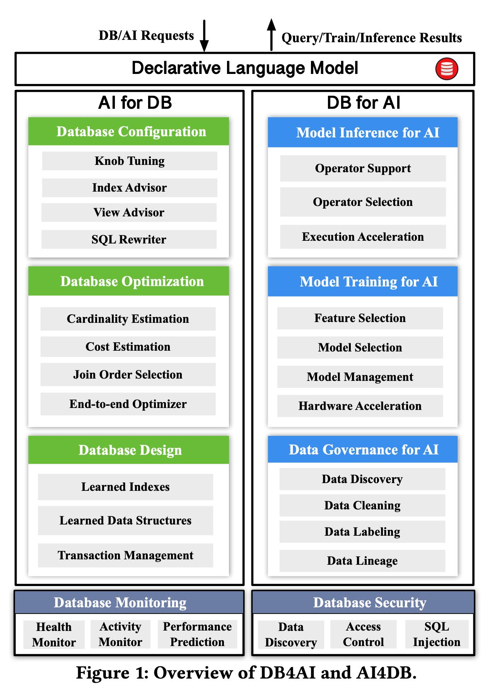

AI Meets Database- AI4DB and DB4AI
sigmod2021 这篇文章主要讲AI和DB之间怎么结合，AI可以为DB做些什么，DB可以为AI做些什么。我自己的感觉是，似乎DB可以为AI做的事情并不多，DB是一个很好数据管理入口，可以更好地利用AI模型。而AI模型可以为DB设计和优化打开许多的空间。文章最后将了一下两者之间应该怎么做co-optimization.
关于DB for AI这个部分包括model inference/training for AI, 这些技术完全没有必要放在DB里面来，作为programming framework不好吗？Data Goverance for AI这个倒是实在的多。

AI for DB可以帮助的东西就比较多了，因为DB里面目前还有许多没有办法自动化但是可以进行自动化的部分，这个部分交给AI是非常自然的。
最后面co-optimization的部分我觉得挺好的：数据格式是否可以融合(tensor/relational model)， 推理是否可以融合(AI推理的成本比较高并且不确定，但是可以做许多复杂的推理)，系统上是否可以融合(将AI和数据处理纳入一个整体系统中)
[!NOTE]
AI&DB co-optimization. There are several challenges in model support, inference, and system integration.
(1) Hybrid relational and tensor model. Traditional CPU cannot ef- ficiently process tensor models and AI chips cannot efficiently process relational models. It calls for effective methods that accel- erate relational operations on AI chips, schedule operators across traditional CPU and AI chips, and supporting both relational and tensor model.
(2) Hybrid DB&AI inference. Many applications require both DB and AI operations, e.g., finding all the patients of a hospital whose stay time will be longer than 3 days. A native way is to predict the hospital stay of each patient and then prune the patients whose stay time is less than 3. Obviously this method is rather expensive, and it calls for a new optimization model to optimize both DB and AI, e.g, new optimization model, AI operator push-down, AI cost estimation, and AI index/views.
(3) Hybrid DB&AI system. It calls for an end-to-end hybrid AI&DB system that supports a declarative language, e.g., AISQL, which extends SQL to support AI operators, an AI&DB optimizer that co- optimizes the two operations, an effective (distributed) execution engine that schedules the two types of tasks, and an appropriate storage engine.